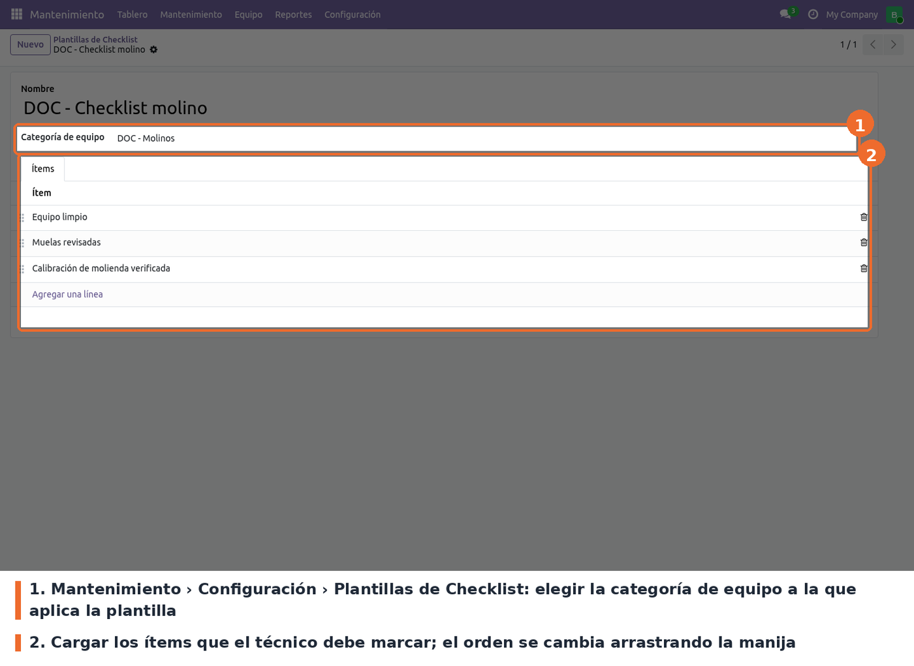
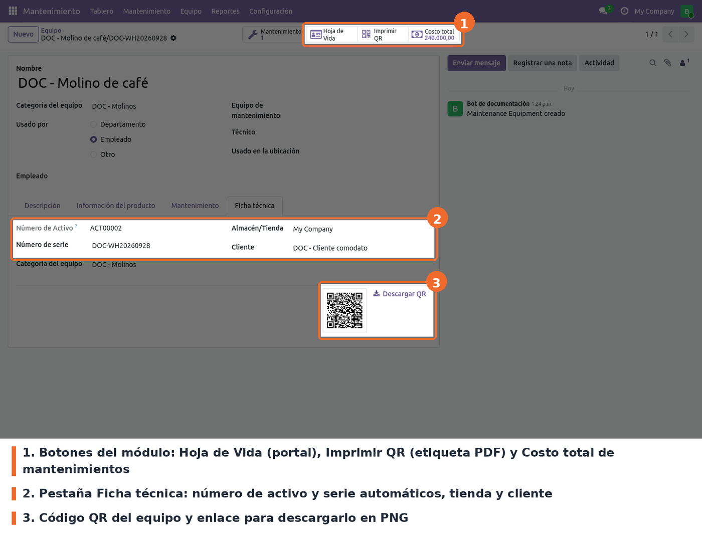
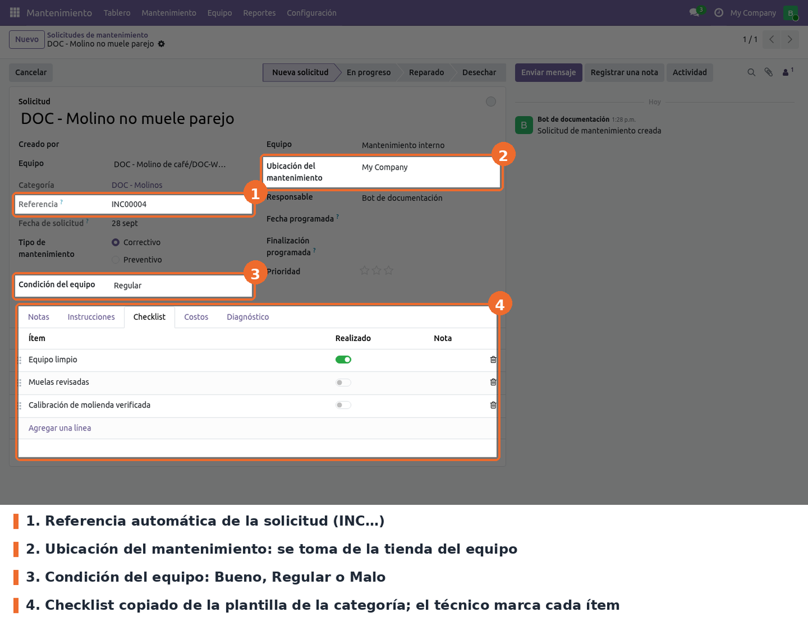
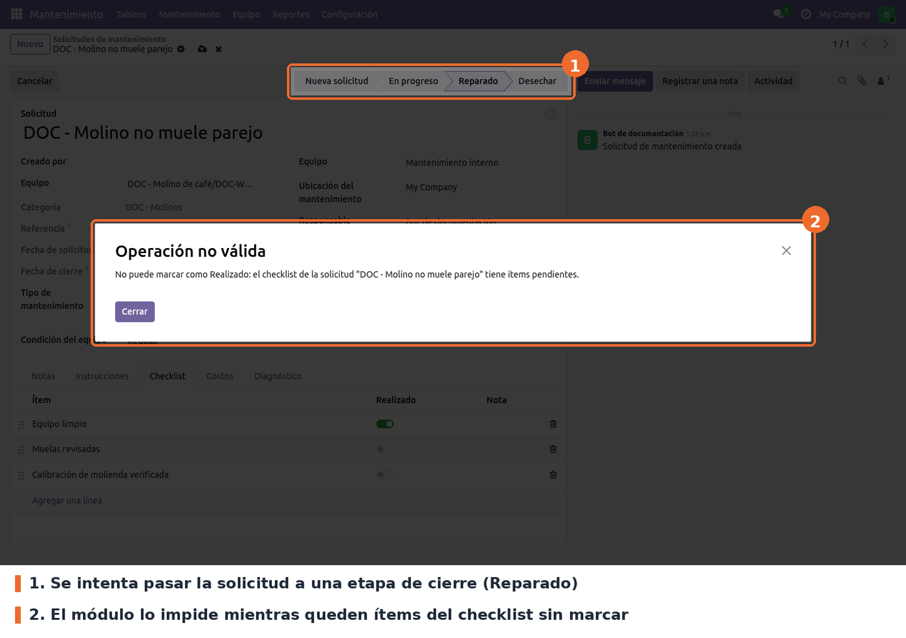
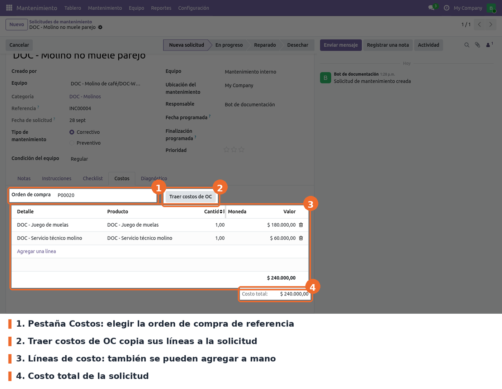
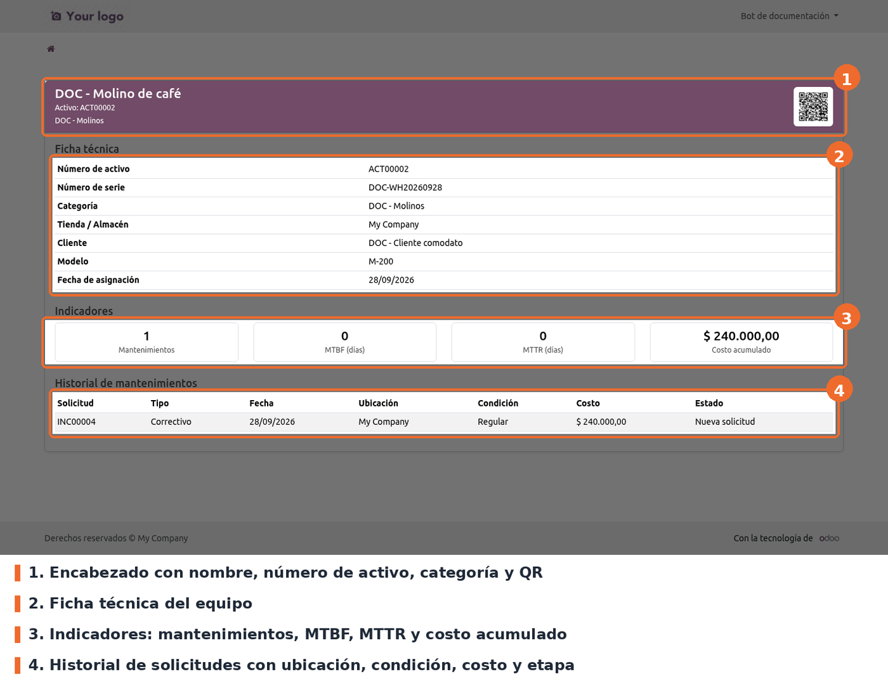

Amplía la aplicación Mantenimiento de Odoo para llevar la trazabilidad de los equipos de las tiendas (neveras, molinos, máquinas de espresso) y el control de cada intervención:
ACT00001…), un
número de serie automático si no se digita uno, la tienda donde está y el cliente asociado (por
ejemplo, un equipo en comodato).INC00001…), condición del equipo,
ubicación del mantenimiento, diagnóstico y un reporte imprimible Orden de Mantenimiento.Existe para que el área de mantenimiento sepa qué equipo hay en cada tienda, qué se le hizo y cuánto costó, y para que un técnico pueda consultar la historia del equipo escaneando su QR.
maintenance, portal, purchase y stock. No requiere librerías
de Python adicionales: el QR se genera con el generador de códigos de barras que ya trae Odoo.Instalar el módulo desde Aplicaciones (aparece como Gestión Integral de Mantenimiento). La instalación crea:
ACT) y Mantenimiento:
Incidencia/Solicitud (prefijo INC), ambas de 5 dígitos y compartidas por todas las compañías;maintenance_management.enforce_checklist con valor True;Los equipos que ya existían antes de instalar el módulo quedan sin número de activo, sin serie automática y sin token de portal (el QR no abre la hoja de vida). Para completarlos, en Mantenimiento › Equipo seleccionarlos en la lista y ejecutar Acción › Asignar Nº de activo, QR y serial. Solo llena lo que falta, así que se puede repetir sin riesgo.
En bases con datos de demostración se cargan además tres categorías (Neveras, Molinos, Máquinas de espresso) con su plantilla de checklist.
El módulo conserva el nombre, los modelos y los nombres técnicos de los campos de la versión 17,
por lo que los datos existentes se mantienen sin script de migración. Los cambios de la migración
fueron de forma: la restricción de número de activo único pasó a la sintaxis models.Constraint,
las vistas de lista usan list en lugar de tree y la hoja de vida del portal dejó de mostrar el
campo Ubicación (location) del equipo, que ya no existe en maintenance de Odoo 19. La tienda
se sigue mostrando como Tienda / Almacén.
Ir a Mantenimiento › Configuración › Plantillas de Checklist y crear una plantilla por categoría de equipo. Las categorías se administran en Mantenimiento › Configuración › Categorías del equipo.

Mantenimiento › Configuración › Plantillas de Checklist: categoría e ítems de la plantilla
A tener en cuenta:
maintenance.group_equipment_manager).El control que impide cerrar una solicitud con ítems pendientes se gobierna con el parámetro del
sistema maintenance_management.enforce_checklist, en Ajustes › Técnico › Parámetros del
sistema (requiere el modo de desarrollador).
True (activo). Con 1, true o yes (sin importar mayúsculas) el control
está activo; con cualquier otro valor, por ejemplo False, queda desactivado.No hay más ajustes. La tienda (Almacén/Tienda) y el cliente se indican en cada equipo, en la pestaña Ficha técnica (ver Uso). El código de la tienda que entra en el número de serie es el Nombre corto del almacén en Inventario › Configuración › Almacenes.
En Mantenimiento › Equipo crear el equipo con su nombre y categoría. En la pestaña Ficha técnica indicar la tienda (Almacén/Tienda) y, si aplica, el cliente. Al guardar, el módulo asigna:
ACT;AAAAMMDD. Por ejemplo, Nevera de
cocina en la tienda ZNG2 registrada el 8 de mayo de 2025 queda NEVCOCZNG220250508;
Ficha del equipo: botones del módulo, pestaña Ficha técnica y código QR
Desde la ficha del equipo:
QR_<número de activo>.png).En la búsqueda de equipos se puede filtrar por número de activo, tienda y cliente, y agrupar por Tienda o Cliente.
Crear la solicitud en Mantenimiento › Mantenimiento › Solicitudes de mantenimiento y elegir el
equipo. En el formulario se cargan solos la Ubicación del mantenimiento (la tienda del equipo)
y el Checklist de la plantilla de su categoría. Al guardar se asigna la Referencia INC.

Solicitud de mantenimiento: referencia, ubicación, condición del equipo y checklist
El técnico registra la Condición del equipo (Bueno, Regular o Malo), marca los ítems del checklist a medida que los hace (con una nota opcional por ítem) y describe lo realizado en la pestaña Diagnóstico.
Mientras quede algún ítem sin marcar, la solicitud no puede pasar a una etapa marcada como Solicitud lista (en las etapas estándar, Reparado y Desechar). Odoo muestra el aviso y no guarda el cambio de etapa.

Intento de cerrar una solicitud con ítems pendientes del checklist
En la pestaña Costos se agregan las líneas de costo a mano (detalle, producto, cantidad y valor) o se traen de una compra: elegir la Orden de compra y pulsar Traer costos de OC. Cada línea de la orden se copia con su descripción, producto, cantidad y subtotal sin impuestos. El Costo total de la solicitud se suma solo y alimenta el costo acumulado del equipo.

Pestaña Costos: orden de compra, botón Traer costos de OC, líneas y costo total
Para imprimir la solicitud usar Imprimir › Orden de Mantenimiento: incluye equipo, fechas, técnico, condición, checklist, costos y observaciones.
Al escanear el QR (o pulsar Hoja de Vida) se abre la página del equipo. La puede ver cualquier persona que tenga el QR, sin iniciar sesión, porque el enlace incluye el token de acceso del equipo. Un usuario interno con permiso sobre el equipo la ve también sin el token.

Hoja de vida del equipo en el portal
web.base.url; debe ser la dirección pública del servidor. Si el servidor atiende
varias bases sin filtro de base de datos (dbfilter), el enlace responde 404 a quien no tiene
sesión.DOC-…: los signos sueltos del
nombre (un guion entre espacios) cuentan como palabra. Corregir la serie a mano; el módulo solo
la calcula si está vacía.maintenance_management.serial_pattern que menciona el código no existe en la base
ni cambia nada: la regla está fija en _compute_or_default_serial(). La serie tampoco es única.invisible="1" dentro de
la lista; en Odoo 19 eso oculta el valor pero deja la columna. Es solo estético.i18n/: un usuario con Odoo en otro idioma los ve igual.static/description/icon.png: en Aplicaciones se ve el ícono genérico de Odoo.models/maintenance_equipment.py: número de activo, tienda, cliente, QR (portal.mixin), costo
acumulado, serie por defecto y las acciones de los botones y de Asignar Nº de activo, QR y
serial. El código de tienda del serial sale de _get_store_code(), aislado para poder cambiar
su origen sin tocar lo demás.models/maintenance_request.py: referencia, condición, ubicación, checklist, costos, carga de la
plantilla (_onchange_equipment_id), bloqueo de cierre (write) y action_bring_costs_from_po.models/maintenance_checklist.py: plantillas, ítems de plantilla e ítems de la solicitud.models/maintenance_request_cost_line.py: líneas de costo, con enlace a la línea de compra de
origen.controllers/portal.py y views/maintenance_portal_templates.xml: la ruta /my/equipment/<id>
y la hoja de vida. Valida el acceso con _document_check_access (token o permisos del usuario).report/qr_label_report.xml y report/maintenance_report.xml: etiqueta QR y orden de
mantenimiento. El QR va embebido como imagen, sin servicio externo.data/: secuencias ACT e INC, el parámetro enforce_checklist y la acción de servidor.demo/demo_data.xml: categorías y plantillas de ejemplo, solo en bases con demostración.tests/; todo se valida a mano.web.base.url. Se calcula al vuelo (no se guarda) con la URL base y el token
del equipo. Si cambia la dirección del servidor, las etiquetas ya impresas apuntan a la
dirección vieja.action_bring_costs_from_po() está aislado para poder llamarlo
más adelante al confirmar la compra o desde un cron; hoy es solo manual.location de maintenance.equipment desapareció del core en 19;
si se vuelve a usar en la plantilla del portal, la hoja de vida falla con AttributeError. En
Odoo 19 el campo Usado en la ubicación del equipo lo agrega stock_maintenance y no lo usa este
módulo.